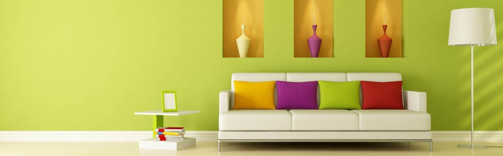

Finding simplicity in life
Life can get complicated really quickly , but it doesn't have to be! There are many ways to simplify your life, a few of which we've ecplored in the past. This week we're taking a bit of a approach though, in how you can find simplicity in the life you already living.
CONTINUR READING

July 23,2022 | 3 comments